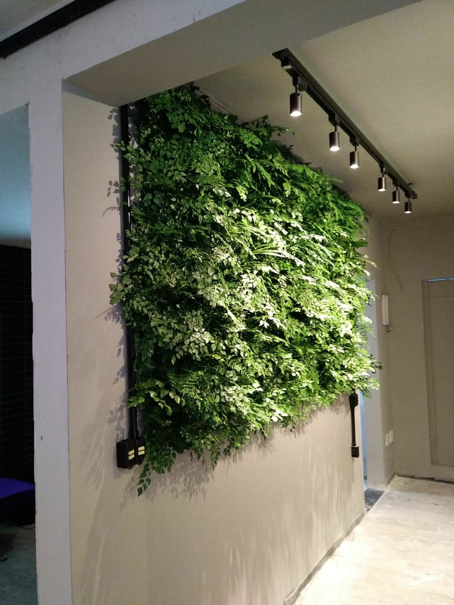

Jardins Preservados
Os Jardins de Plantas Preservadas são resultado de um longo processo handmade de produção, dividido em 5 etapas: corte, desidratação, preservação, tingimento e montagem. Artesanalmente feitos sob medida conforme o projeto, os Jardins Verticais Preservados dispensam rega, poda e manutenção periódica, sendo a opção ideal para a decoração de ambientes internos.
